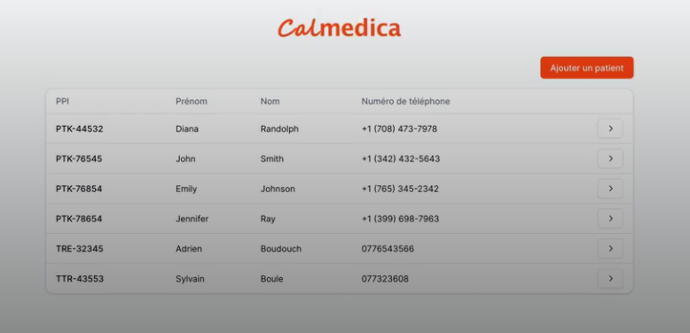

Une plateforme qui transcrit les échanges téléphoniques avec les patients et les affiche comme une conversation, avec résumé et mots-clés, pour la start-up e-santé Calmedica.

Calmedica est une start-up française fondée en 2013, spécialisée dans la gestion automatisée des parcours de soins et la communication entre patients et professionnels de santé.
Pendant le hackathon, nous avons construit une plateforme qui passe et enregistre les appels, les transcrit automatiquement puis en extrait l'essentiel pour le personnel soignant.
La stack de Calmedica